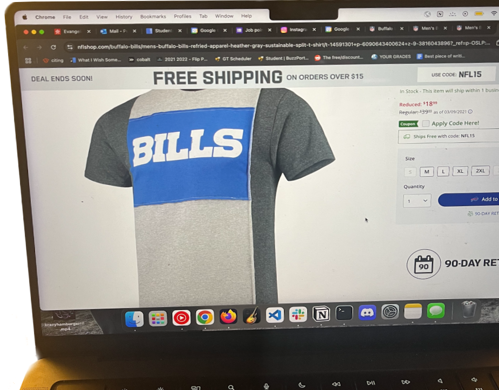
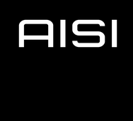
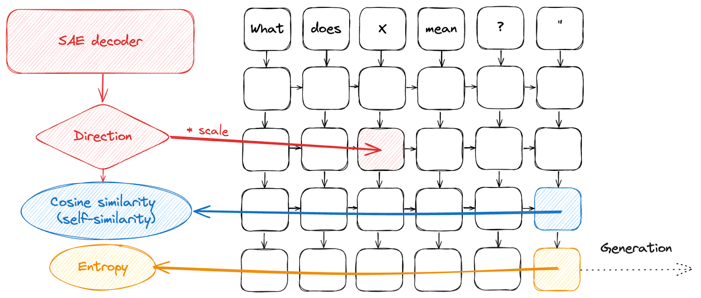
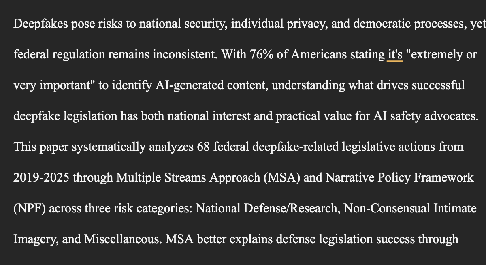
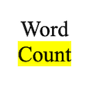

"The state of things is evidently far from simple" - William James
Latest highlighted read:
Things I worked on

Fieldbuilding, leading the policy efforts in AI to ensure a positive future.
learn more →Worked with the Institute for AI Policy and Strategy on robotics threat modeling.
Currently published: a reading list geared for a policy audience that should take <45 mins, and commentary on the FCC's restrictions on new foreign advanced robotics.

Working with Stepan Shabalin to apply SAEs for mech interp on VLAs.

A paper analyzing US legislation trends around deepfakes in the 2020-2025 time period, produced as my final artifact for INTA8000 under Prof. Margaret Kosal.
read here →
A published Google Docs extension for selective word counting. 2K+ downloads!
website + download →Sources I recommend
Mostly policy, love their weekly briefings!
visit source →More technical, great analysis of model cards.
visit source →More anthropological/social commentary shaped.
visit source →Exactly what you'd assume from the title.
visit source →Great books
An absurdist comedy all about self-forgiveness with outstandingly well-written female characters. Probably my favorite work of literature ever, the dialogue is both histerical and poignant.
The prime example of "esperpento" a Spanish play genre that can be understood as being a tragedy with strong social critique. Beautiful but soul-crushing, I was in a funk for a few days.
Ted Chiang is a favorite between sci-fi fans and this short story along with "Hell is the Absence of God" are my favorite.
Fantastic long-form essay-argument, made me grateful for the randomness inherent in human talent and encouraged my first public Substack
It's up there with Fahrenheit 451, but I found the concept of SOMA more troubling. Weirdly, I did not enjoy 1984 as much.
Very interesting reflections on the role of the law. Reading it was the first time I encountered the argument that suing and leveraging the law as the civilized alternative to direct violent acts is merely a change in the form of violence. The one suing simply defers their desire for retribution to the law. You can find the PDF here.

Hey, I'm Rocio! B.S./M.S. Comp Sci @ Georgia Tech, minor in Law, Science and Technology. think of the c as a th and you're good to go.
I want to understand what good AI Policy actually looks like so I can be useful in shaping it either by impactful technical findings or situationally aware recommendations. I co-direct the AI Safety Initiative at Georgia Tech, leading field-building efforts to get the very best working on preventing harms from transformative AI. Check out some of my thoughts on this on Substack.
What I'm up to
- IAPS summer fellowship, worked on physical AI threat modeling, read my explainer on IAPS' Attack Surface on the FCC restrictions on new foreign advanced robotics, here
- Co-directing AISI, read about us here
- Interpretability research on VLAs in the PAIR Lab
- Reviewed the Spanish translation of METR's OpenAI/Hugging Face incident investigation report
If you're at Tech and want to get involved with AISI, come to our next event and feel free to reach out
Provide anonymous feedback here
rocio.perales (at) gatech.edu
Education
Skills
Professional & Research Experience
- Leading interpretability SAE-based work on VLAs (π0.5) targeting singular feature ablation to test feature transferability from base to finetuned models, advised by Stepan Shabalin and Prof. Animesh Garg
- Assisted in ICRA paper on Progress Reward Model training achieving a 10-15% performance jump on precise tasks
- Synthesized a 269-page Great American AI Act discussion draft into a 2-page decision brief for the Policy Team
- Authored a public explainer and policy recommendations on the FCC's proposed ban on foreign-made advanced robotics, securing review from 5 policy experts through direct outreach
- Conducted internal robotics threat modeling for the Frontier Security team, including BOTEC calculations on drone attacks and interviews with 6 stakeholders across industry, military, academia, and think tanks
- Trained YOLO models on AWS GPU instances and integrated autoencoders for powerline anomaly detection
- Google Docs extension allowing for tailored word counts with 3K+ downloads
Leadership & Campus Involvement
- Selected by Provost Raheem Beyah to chair subcommittee for Georgia Tech's institutional AI strategy
- Designed and deployed a campus-wide AI usage survey collecting 1K+ responses without monetary incentives
- Lead a 15-person exec organization with $30K+ of external funding and set overall strategy
- Created a Policy Fellowship curriculum run as a course seminar with Georgia Tech's OMSCS program
- Led deepfake governance research under Dr. Margaret Kosal
- Led implementation on the multi-robot pathfinding system (C++/ROS2, real-time decision-making under uncertainty); placed 2nd in the technical challenge and 4th overall at RoboCup 2025 Intl